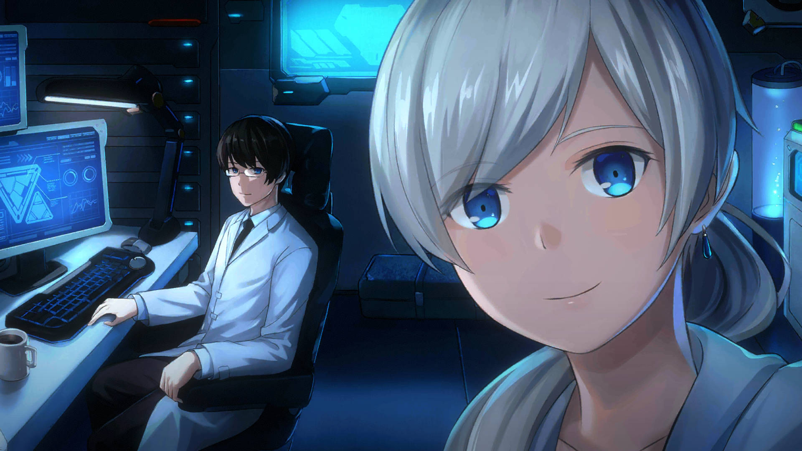
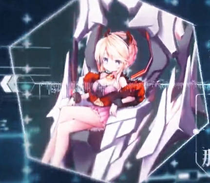
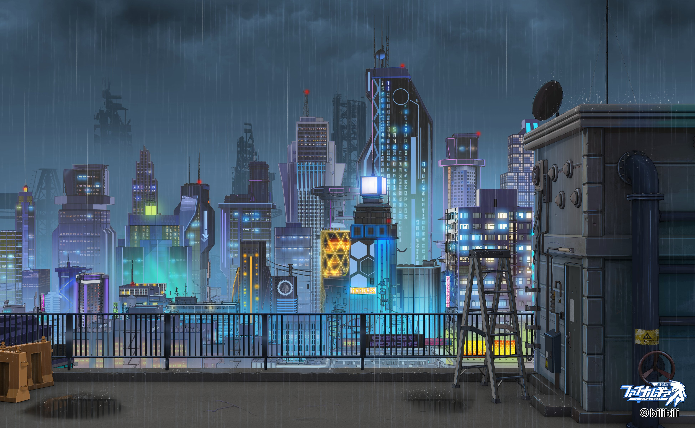

↑に戻る
↑に戻る

これはファイナルギアの用語を見るためのツールです。
それなりのネタバレと推測を含みます。
keyword
検索
旧世界
崩壊前の世界
メテオインパクト以前は人類がもっとも繁栄した時代であり、崩壊後の世界より高い技術力を持っていた。
いくつかの施設は崩壊後も現存している。
いくつかの施設は崩壊後も現存している。
メテオインパクト
旧暦2110年、『メテオインパクト』と呼ばれる隕石衝突により人類文明は地上からほぼ消滅した。
人類は生き残るため衛星や地下に避難した。これらの計画は『アポカリプス・エクソダスー方舟生存計画』と呼ばれる。
再び人類が地上に戻るまでには数百年の時を要した。
人類は生き残るため衛星や地下に避難した。これらの計画は『アポカリプス・エクソダスー方舟生存計画』と呼ばれる。
再び人類が地上に戻るまでには数百年の時を要した。
BNF歴
崩壊前の世界で使用されていた年号。詳細は不明。
衛星世界
一部の人々は地上を離れ、星の衛星に避難した。この計画は『サンタドリア』計画と呼ばれた。
衛星に避難するには多額の資金が必要で、衛星に避難した人々は富裕層に限られた。
衛星に避難するには多額の資金が必要で、衛星に避難した人々は富裕層に限られた。
電子世界
一部の人々は意識を電子化し、仮想の電子世界に避難した。この計画は『サイバーアーク』計画と呼ばれた。
電子化にはあまり費用が掛からず、多くの一般人はこの方法を選択した。電子化した人々の肉体は凍結保存された。
人々は電子世界で年を取ることも繁殖することもなく数百年の時を過ごした。
『イブリンストーリー』の舞台。
電子化にはあまり費用が掛からず、多くの一般人はこの方法を選択した。電子化した人々の肉体は凍結保存された。
人々は電子世界で年を取ることも繁殖することもなく数百年の時を過ごした。
『イブリンストーリー』の舞台。
海底世界
地下世界
エリザベスが訪れたという世界。ゲーム中にはまだ登場していない。
ダークメテオ
ダークメテオ
『メテオインパクト』により飛散したとされる物質。ダークマテリアルや黒曜石などとも呼ばれる。
いくつかの施設は崩壊後も現存している。
いくつかの施設は崩壊後も現存している。
ケゲア帝国
ケゲア帝国の成り立ち
大陸東部に位置し、もっとも人口の多い地域にケゲアの前身となる国は誕生した。当初は議会制の国だったが、約60年前、1人の議員が皇帝となり、ケゲア帝国が誕生した。現在の新暦は帝暦でもある。
初代帝国皇帝は第一次侵略戦争を開始し、一気に国土を拡大した。現在の国土はこのころに定まった。
その後女王リサが帝位を継承し、約5～2年前第2次侵略戦争を開始するが、現在のアイレタとなる抵抗軍(ケゲアは反乱軍と呼んだ)との抗争中に娘のリリアンがクーデターを起こしリサ政権は崩壊。現在の女王はリリアンとなっている。
リリアンの治世は概ね好評だが、それはリリアンが目的を達成するための手段の一つに過ぎない。
初代帝国皇帝は第一次侵略戦争を開始し、一気に国土を拡大した。現在の国土はこのころに定まった。
その後女王リサが帝位を継承し、約5～2年前第2次侵略戦争を開始するが、現在のアイレタとなる抵抗軍(ケゲアは反乱軍と呼んだ)との抗争中に娘のリリアンがクーデターを起こしリサ政権は崩壊。現在の女王はリリアンとなっている。
リリアンの治世は概ね好評だが、それはリリアンが目的を達成するための手段の一つに過ぎない。
女王リサ
先代のケゲア女王。リリアンの母に当たる。
残酷な女王として知られ、敵対するものや失敗するものは容赦なく処刑した。国民にも容赦なく、密告や冤罪によって裁判もなく処刑されたものが多かった。
リリアンのクーデター後はどこかに幽閉されているともすでに死亡しているとも言われる。
残酷な女王として知られ、敵対するものや失敗するものは容赦なく処刑した。国民にも容赦なく、密告や冤罪によって裁判もなく処刑されたものが多かった。
リリアンのクーデター後はどこかに幽閉されているともすでに死亡しているとも言われる。
ZZ
反女王派
女王リリアンと敵対する派閥。ベルフォード伯爵など多くの帝国貴族が含まれる。
ベルフォード伯爵の死後一斉決起するが、リリアンによって一掃されようとしている。
ベルフォード伯爵の死後一斉決起するが、リリアンによって一掃されようとしている。
騎士団
代々帝国の帝位につく者に仕える直属の騎士団。女王リサ以降は『女王の剣』とも呼ばれている。
皇帝直属の親衛騎士団や教会付きの藍河騎士団など色々な騎士団がある。かつてアイレタに侵攻したコーレリアも騎士団長。 彼らの皇帝に対する忠誠は絶対的なものだったが、リリアンのクーデター以降は分裂気味となった。
皇帝直属の親衛騎士団や教会付きの藍河騎士団など色々な騎士団がある。かつてアイレタに侵攻したコーレリアも騎士団長。 彼らの皇帝に対する忠誠は絶対的なものだったが、リリアンのクーデター以降は分裂気味となった。
帝国の4騎士
第2次侵略戦争中に活躍した帝国の騎士。騎士団長コーレリア、ホークアイ・ヘプニェク、剛腕騎士フェニックス、鉄壁騎士エイミー。
帝国の精鋭として何度もアイタ達と激しい戦いを繰り広げた。
しかし現在は2名しか残っておらず、その栄光は失われている。
帝国の精鋭として何度もアイタ達と激しい戦いを繰り広げた。
しかし現在は2名しか残っておらず、その栄光は失われている。
ブラックピエロ
黒き道化師とも呼ばれる。
千島国
ファントム計画
極夜計画
ミシェール監獄
ミカエル監獄とも呼ばれる。
星新教
ケゲアの国教。衛星に住む人々を崇める。それらは『サンタドリア計画』で衛星に移住した人々である。
シャコガイやコディスは『天上人』と呼ばれる衛星に住む人で、『執行官』という肩書は天上人としての役割であると考えられる。
シャコガイやコディスは『天上人』と呼ばれる衛星に住む人で、『執行官』という肩書は天上人としての役割であると考えられる。
悪魔教
星新教会
ロクサーヌが所属する星新教の教会。『反女王派』に属している。
藍河騎士団
教会を守るための騎士団。しかし現在は教会派とは紛争中。リリアンとの折り合いも悪い。
聖殿山
『星新教』が聖地と崇める山。登山も盛ん。
しかし現在は教会と藍河騎士団の一大係争地となっている。
しかし現在は教会と藍河騎士団の一大係争地となっている。
帝国フォーグリン学院
リンベル研究所
リリアンによって見出された天才リンベル博士の研究所。本来の専門は融合実験。
リンベル自身は融合実験にしか興味はないが、ケゲアからの援助を引き出すため機体の設計やホムンクルスの製造など幅広く行っている。プリンの専用機もリンベル博士の設計。
人体実験なども行っているが被験者には給与などの待遇を約束し、実験の成果たちと一緒に暮らすなど変な倫理観を持っている。
研究員としてニッジーやスウィーティー、メイメイ、戦闘員としてα-16が所属している。
ケゲアの軍事技術の集大成ともいえる『ファントム計画』もほぼリンベル博士一人によって完成された。
リンベル自身は融合実験にしか興味はないが、ケゲアからの援助を引き出すため機体の設計やホムンクルスの製造など幅広く行っている。プリンの専用機もリンベル博士の設計。
人体実験なども行っているが被験者には給与などの待遇を約束し、実験の成果たちと一緒に暮らすなど変な倫理観を持っている。
研究員としてニッジーやスウィーティー、メイメイ、戦闘員としてα-16が所属している。
ケゲアの軍事技術の集大成ともいえる『ファントム計画』もほぼリンベル博士一人によって完成された。
シェイド研究所
北軍(現在のアイレタ)とケゲアの国境付近にあったとされる研究所。
無人機やホムンクルスなどの製造が専門であり、アリエルはここで製造された。第2次侵略戦争の際アイタらによって破壊された。
無人機やホムンクルスなどの製造が専門であり、アリエルはここで製造された。第2次侵略戦争の際アイタらによって破壊された。
アウグスティヌス研究所
オスフィルド工会
ケゲアの量産機の製造を一手に担っている会社。図鑑にのみ登場。
アイレタ連邦
ZZ
総統派
アイレタを収める総統の派閥。軍団長派とは犬猿の仲である。
連邦の統治などは総統の管轄となっている。『アイレタ保安部』は総統の管轄下にある。
連邦の統治などは総統の管轄となっている。『アイレタ保安部』は総統の管轄下にある。
軍団長派
モルガン・ヘリング元帥の派閥。軍や『研究所』は元帥の管轄下にある。
アイレタ連邦保安部
アイレタ第1研究所
アイレタ大監獄
レイガード
アイレタの5つある自治区の1つ。『攻殻機動隊コラボ』で登場。
自己進化するAIによって統治されており、人々はその指示に依存しきっている。そのためAIが自己の進化のために暴走しても盲目的に従った。
イブリンらによってAIが破壊され、数々の人体実験などの悪歴が暴露されてからは自治権剥奪の危機にある。
自己進化するAIによって統治されており、人々はその指示に依存しきっている。そのためAIが自己の進化のために暴走しても盲目的に従った。
イブリンらによってAIが破壊され、数々の人体実験などの悪歴が暴露されてからは自治権剥奪の危機にある。
電子教
サイバー教とも呼ばれる。
ラプール山
サイバー教とも呼ばれる。
ジヌンガ港
『ジヌンガ海峡』に面するアイレタの港。
ヴラミルインダストリ
パンドラの父ディミュが経営する武器会社。多くの一般的な武器やアイレタ量産機の製造を行っている。
『紅茶計画』に登場。
『紅茶計画』に登場。
デコリーインダストリ
ミラベルが経営する会社。ヴラミルインダストリとはライバル関係。
元々は大手運送会社で、製造業やサービス業にも参入している。
アイタ設計の下、巨大合体ロボ『アルカナ』の製造もおこなった。
元々は大手運送会社で、製造業やサービス業にも参入している。
アイタ設計の下、巨大合体ロボ『アルカナ』の製造もおこなった。
ハイクシアー
ZZ
魔女
ナコトリスと共に最近になってハイクシアーに現れたグループ。『魔女システム』と呼ばれる奇妙な技術を持つ。
ソラル、フェヴィア、チリノ、バソリーの4人は四大魔女と呼ばれている。他にマルマ、ミシェリアも所属している。
ソラル、フェヴィア、チリノ、バソリーの4人は四大魔女と呼ばれている。他にマルマ、ミシェリアも所属している。
創設家
創設者や創設一家などとも呼ばれる。ハイクシアー地域に昔から住むメンテナンスなどを生業としているグループ。
現在の当主はスモラ。最近はナコトリスに依頼されて多くの機体などを製造している。部下のオパールは高性能な義肢なども製造している。
現在の当主はスモラ。最近はナコトリスに依頼されて多くの機体などを製造している。部下のオパールは高性能な義肢なども製造している。
シェイプシフター
アレクサによって最近設立されたグループ。部下はフーラ。
審判の星
処刑人家族などとも呼ばれる。ハイクシアー地域に昔から住む。
SweetQueen
法の執行一家、法の番人などとも呼ばれる。ハイクシアー地域に昔から住む。
現在の当主はパッティ。部下としてカラマス、ペイズリーなどがいる。
現在の当主はパッティ。部下としてカラマス、ペイズリーなどがいる。
剃刀団
数あるハイクシアーの組織の一つ。強盗などを行っていた。
『トリック＆トリート』でアレクサの策略によって壊滅した。
『トリック＆トリート』でアレクサの策略によって壊滅した。
平和維持隊
数あるハイクシアーの組織の一つ。『トリック＆トリート』に登場。
元保安官のジェシーとの関係は不明。
元保安官のジェシーとの関係は不明。
砂漠暴走族
組織などではなく、ただの同じ趣味の集まりの模様。『サクラ大戦コラボ』に登場。
ヴァイン港
ブラックアーク
ZZ
ヘルシーアンドハッピーエブリデイ
ZZ
パラノイド
ZZ
アグネスの関係者
アグネス
アンドレイ・アウグスティヌス
その他
黒皇后聖典
月面
大陸中を行動範囲とする運送会社。コディスとシャコガイが取締役。『月面大暴走』をはじめとする複数のイベントに登場する。
一流の運送会社とのことだが、イベントに登場するたびに必ずトラブルが発生する。
一流の運送会社とのことだが、イベントに登場するたびに必ずトラブルが発生する。